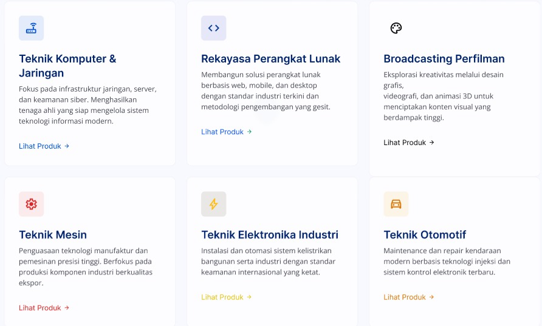

Sistem Informasi TEFA Sekolah
Membangun sistem informasi Teaching Factory (TEFA) sekolah berbasis web secara kolaboratif untuk mengelola alur kerja jurusan, katalog produk, dan pesanan jasa siswa.
Repositori GitHub ↗
Sedang Aktif